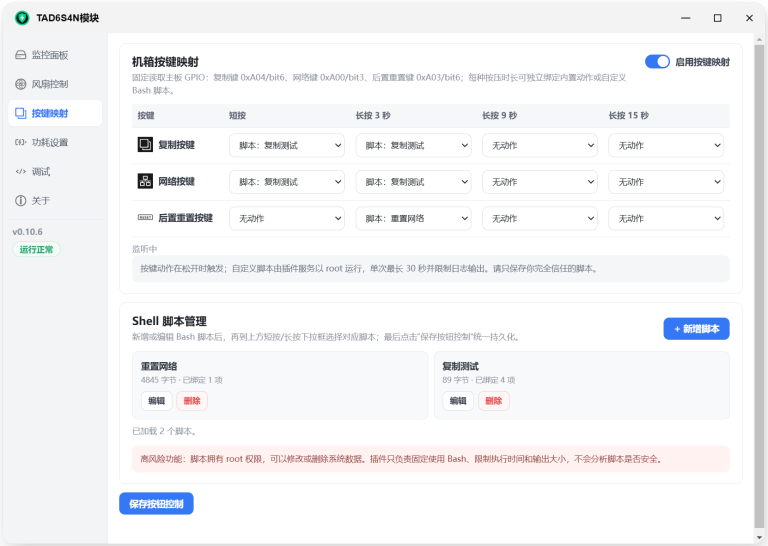
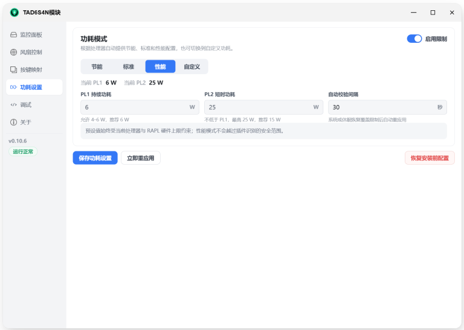
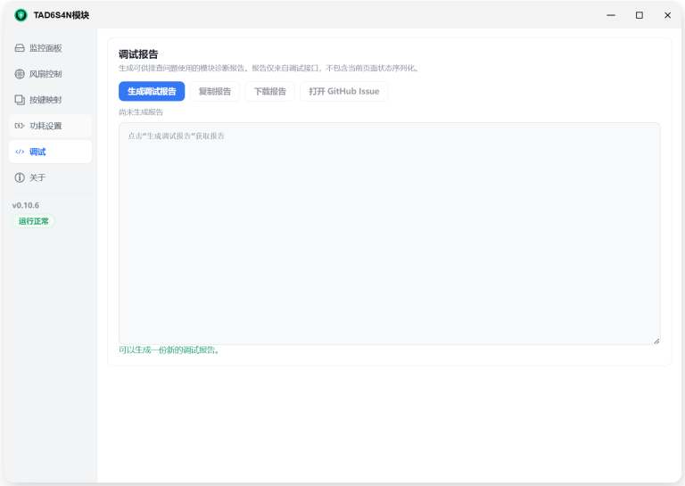

监控面板、风扇控制、按键映射、功耗设置、开关计划、电源监控、固件升级、压力测试——一个页面全管完，手机 APP 同样适配。
围绕 TAD6S4N 主板的监控、散热、按键、功耗与固件做的一整套管理工具。
提供硬盘面板（提供硬盘物理位置）和所有传感器温度和风扇转速，诊断信息等。
通过 CPU、HDD 和 NVMe 三条温度曲线智能调度散热，并支持按风扇独立选择温度来源、提供历史查询功能。
适配前置复制、网络按键和后置 RESET 孔，每个按键支持四种触发时长与提供多种预置备份方式和自定义 Bash 脚本。
提供节能、标准、性能和自定义功耗模式，直观限制 PL1 与 PL2 功耗墙。
计划开关机功能，提供定时、周期自动开关机计划。
实时显示功耗、累计功耗、转换效率等等功能。
可直接在线升级主板 BIOS 和万兆网卡固件。
测试硬件稳定性。
手机 APP 的 UI 也针对性适配，可以用飞牛 APP 进行设置。
真实界面截图，桌面与手机浏览器同样适配。



免费使用，应用中心手动安装，配置与历史数据随升级保留。